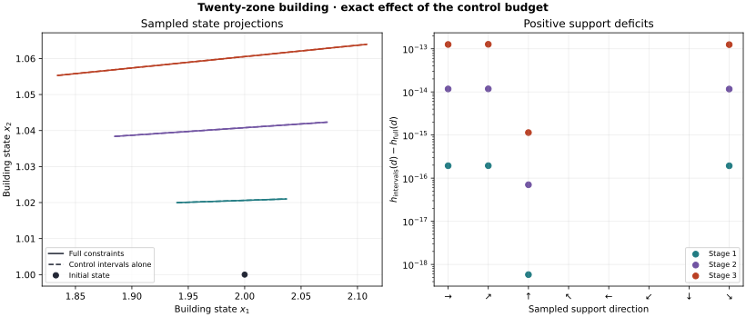

Exact support certificates for three catalogue models
The CSL HiGHS adapter declined 192 support queries before invoking the solver because three models had coefficients below the adapter’s nonzero threshold. A separate rational calculation certifies all 192 sampled supports for the same inputs. The evidence keeps the original refusals.

Certify a support value
For a direction d in the plotted plane at stage k, the state objective is dTPkxk. The dynamics turn this into a constant plus one linear objective cjTuj per control stage. The C++ producer evaluates the stored binary64 coefficients as exact rationals.
Optimise over the control intervals [lj, rj]. The building also has one independent upper budget ajTuj ≤ bj per stage with nonnegative weights. Sort the profitable controls by objective gain per unit of budget. Take as much of each control as its interval and the remaining budget allow.
The stage objective is bounded above by this expression for any λj ≥ 0.
λjbj + maxlj ≤ u ≤ rj (cj − λjaj)Tu.
The independent checker propagates actuator columns forward to obtain the objective coefficients. It reconstructs the witness trajectory, checks the original constraints, and compares its objective with the sum of the stage upper bounds plus the constant. Equality proves the sampled support. This also proves support for the full profile when the witness satisfies all original state constraints.
Read the certified differences
| Model | Certificates | Strict reductions | Largest reduction |
|---|---|---|---|
| Bicycle with actuators (23) | 64 | 0 | 0 |
| Ten-generator ring (27) | 64 | 0 | 0 |
| Twenty-zone building (28) | 64 | 12 | 1.27 × 10−13 |
Each row contains 32 direction-stage samples for the full profile and the same 32 for control intervals alone. The bicycle and building use source-continuous domains. The generator ring uses the archived authored continuous domain.
The largest absolute discrepancies between the two earlier floating-point profiles were 8.50 × 10−8 for the generator ring and 4.78 × 10−7 for the building. In both cases the earlier interval-only value was lower than the full-profile value. The larger feasible domain must have equal or greater support. The apparent overlap in the building plot is consistent with the small exact gap.
Reproduce the certificates
Extract the evidence archive. Follow RUN.txt to compile the C++ producer with GMP 6.3.0 and nlohmann/json 3.11.3, regenerate the three certificate files, and run the Python checker on the fresh results.